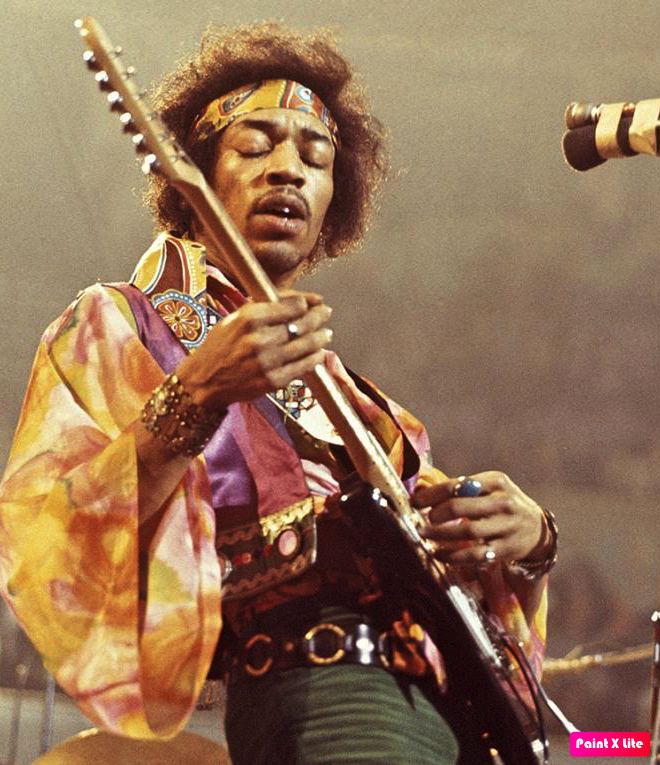
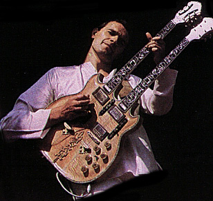
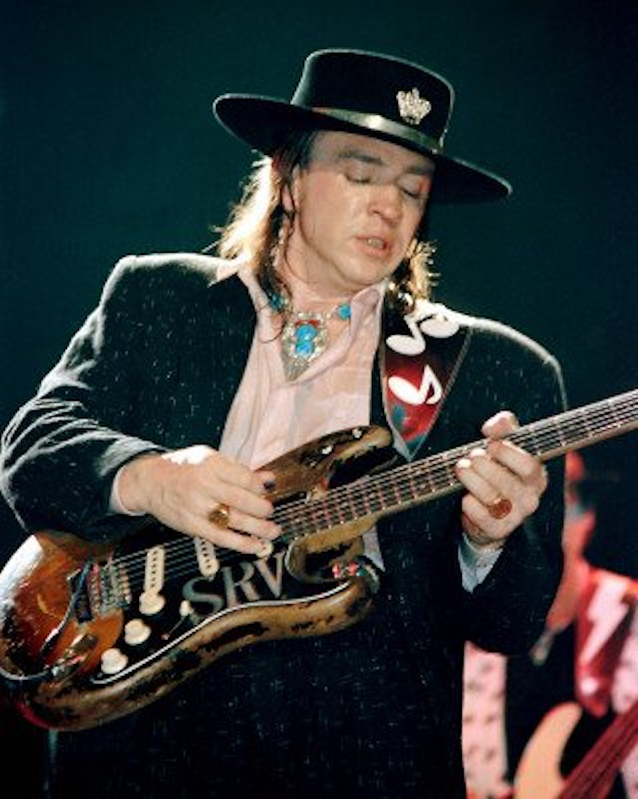
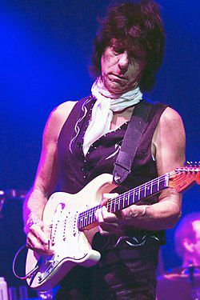
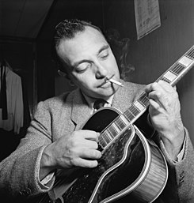
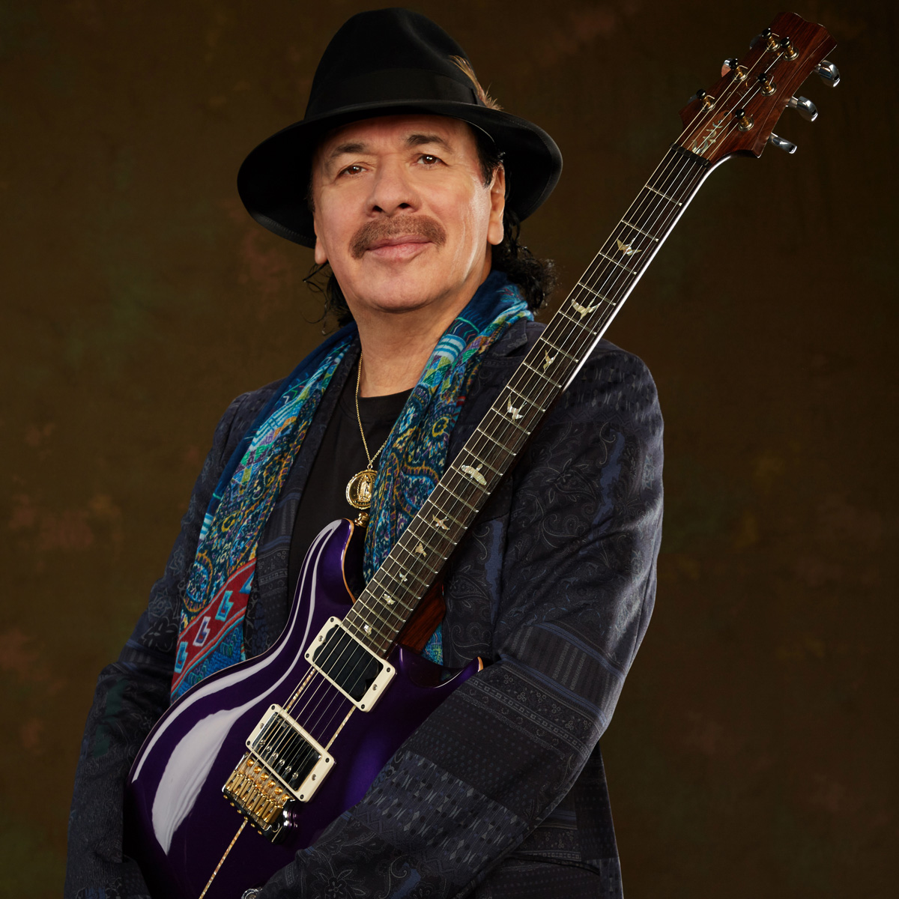
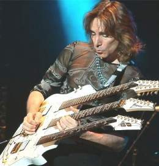
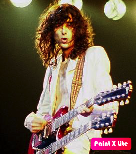

Gigantes de la guitarra
Grandes guitarristas de todos los tiempos
| Nombre | Nacido Activo |
Estilos | Calificación | ||
|---|---|---|---|---|---|
| 1 |  |
Patrick Bruce Metheny | Lee Sumit, MA Estados Unidos 1954 1970-Presente |
Jazz, Fusion, Free Jazz, Clasico | |
| 2 |  | James Marshall Hendrix | Seattle, Washington, Estados Unidos 1942 1963-1970- |
Rock, Blues, Rythm&Blues | |
| 3 |  | John McLaughlin | Doncaster, Reino Unido 1942 1960-Presente |
Rock, Blues, Etnica | |
| 4 |  | Stephen Ray Vaughan | Dallas, Texas, Estados Unidos 1954 1963-1970- |
Rock, Blues | |
| 5 |  | Geoffrey Arnold Beck | Wallington, Reino Unido 1944 1964-Presente |
Rock, Blues, Rythm&Blues | |
| 6 |  |
David Jon Gilmour | Cambridge, Reino Unido 1946 1964-Presente |
Rock Progresivo, Pop-rock | |
| 7 |  | Jean Django Reinhardt | Liberchies, Bélgica 1910 1928-1953 |
Jazz, Gypsy Jazz | |
| 8 |  | Carlos Humberto Santana Barragán | Autlán de Navarro, Jalisco, México 1947 1964-Presente |
Rock, Blues, Latin Rock | |
| 9 |  | Steven Siro Vai | Carles Place, New York, Estados Unidos 1960 1978-Presente- |
Rock, Hard Rock | |
| 10 |  | James Patrick Page | Heston, Middlesex, Reino Unido 1944 1957-Presnte- |
Rock, Blues, Rock Progresivo, Clasico |